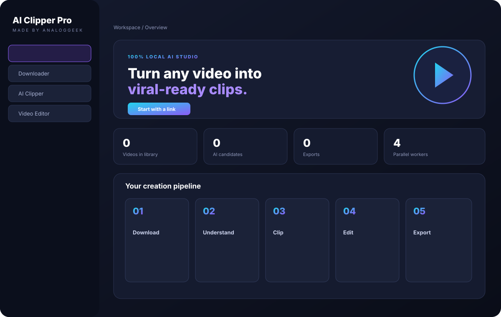

Download anything
Max-quality single videos, subtitles, full playlists with item selection and a permanent local library.
Paste any video or playlist. Your own AI finds the viral moments, cuts them, captions them and exports them — privately, on your hardware. No uploads. No subscriptions.
No stitching together six tools. AI Clipper Pro handles the whole journey from source link to scheduled upload.
Max-quality single videos, subtitles, full playlists with item selection and a permanent local library.
Speech energy, scene changes and tracked player motion fused into one ranked viral score.
Multiple non-overlapping moments from one source — or from many selected videos at once.
Video, caption, sticker and audio tracks. Split, trim, inspect, import, search stock media and generate art on the spot.
Four caption presets, royalty-free procedural SFX, music beds, reframing, color controls and optional channel branding you choose.
Parallel 1080p Rec.709 H.264/AAC MP4s with fast-start and optional resumable YouTube uploads. No app watermark unless you add your own logo in Settings.
Switch between the real workspace screens.

Library, live hardware usage and the complete creation pipeline.
Video link or local file
Whisper + YOLOX locally
Ranked viral moments
Captions, SFX, stickers
Export or upload
The app detects your RAM and GPU, downloads the right local models and runtimes, activates them and saves them in the folder you choose. Cloud features show a direct “Get API key” link.
Live CPU, RAM, GPU and app-folder storage telemetry — plus per-clip render stats you can copy in one click.
Installers include the app, local Python engine and FFmpeg. Models install from inside the app.
npm install && pip install -r backend/requirements.txt && npm startUnsigned installers may trigger an OS warning on first launch. Verify with SHA256SUMS.txt from every release.
Yes. Downloading source videos needs internet. After the one-time model download, analysis, clipping, editing and rendering stay on your machine. Cloud keys are opt-in.
Use npm start for the browser studio — it works even without Electron. The desktop launcher also falls back automatically. Packaged builds now pick the exact Windows/macOS/Linux + x64/ARM64 engine binary.
Inside ~/.AiFreeClipping/cache. The Models page shows one-click install buttons and direct links for every local model and API service.
Yes. The AI Clipper results screen has Copy effects to all, and each render records the hardware used with a copyable stats button.